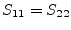

Often it will happen that a user needs to implement his own model. Therefore, it is useful to supply devices that are defined by arbitrary equations.
For example the user must enter an equation describing how the
port current  depends on the port voltage and an
equation describing how much charge
depends on the port voltage and an
equation describing how much charge  is held due to the
voltage
is held due to the
voltage  . These are time domain equations. The most simple way
then is a device with two nodes. Defining
. These are time domain equations. The most simple way
then is a device with two nodes. Defining
| (10.271) |
| (10.272) |
the MNA matrix for a (non-linear) DC analysis writes:
| (10.273) |
For a transient simulation, equation (6.89) on page
![[*]](crossref.png) has to be used with
has to be used with  and
and  .
.
For an AC analysis the MNA matrix writes:
| (10.274) |
And the S-parameter matrix writes:
|  | (10.275) | |
| (10.276) | ||
| (10.277) |
The simulator needs to create the derivatives  and
and  by its own.
This can be done numerically or symbolically. One might ask why the
non-linear capacitance is modeled as charge, not as capacitance.
Indeed this may be changed, but with a computer algorithm, creating
the derivative is easier than to integrate.
by its own.
This can be done numerically or symbolically. One might ask why the
non-linear capacitance is modeled as charge, not as capacitance.
Indeed this may be changed, but with a computer algorithm, creating
the derivative is easier than to integrate.
The component described above can be expanded to one with two ports (two pairs of terminals: terminal 1 and 2 and terminal 3 and 4). That is, the currents and charges of both ports depend on both port voltages and . Thus, the defining equations are:
| (10.278) |
| (10.279) |
| (10.280) |
| (10.281) |
The MNA matrix for the DC analysis writes:
| (10.282) |
For a transient simulation, the DC equations have to be extended by the non-linear (trans-) capacitances, e.g. for backward Euler:
| (10.283) | ||
| (10.284) | ||
| (10.285) | ||
 |
(10.286) |
| (10.287) |
For an AC analysis the MNA matrix writes:
As can bee seen, this scheme can be expanded to any number of ports. The matrices soon become quite complex, but fortunately modern computers are able to cope with this complexity. S-parameters must be obtained numerical by setting equation 10.288 into equation 15.7.
The above-mentioned explicit models are not useable for all components. If the Y-parameters do not exist or if the equations cannot be analytically transformed into the explicit form, then an implicit representation must be taken. hat is, for a one-port (two-terminal) component the following formulas are defined by the user:
| and | (10.289) | |
| and | (10.290) |
The MNA matrix for the AC analysis writes as follows:
| (10.291) |
As usual, for the DC analysis the last zero on the right hand side has to be replaced by the iteration formula:
| (10.292) |
The S-parameters are:
| (10.293) | ||
| (10.294) |
Consequently, for a two-port device two equation are necessary: One for first port and one for second port:
| 0 | (10.295) | |
| 0 | (10.296) |
Building the MNA matrix is again straight forward:
| (10.297) |
Once more, this concept can easily expanded to any number of ports. It is also possible mix implicit and explicit definitions, i.e. some ports of the device may be defined by explicit equations whereas the others are defined by implicit equations.
The calculation of the S-parameters is not that trival. The Y-parameters as well as the Z-parameters might be infinite. A small trick can avoid this problem, as will be shown in the following 2-port example. First, the small-signal Y-parameters should be derived by using the law about implicit functions:
| (10.298) |
The equation reveals immediately the difficulty: The inverse of the current Jocobi matrix may not exist. But this problem can be outsourced to one single scalar number by using Cramer's rule for matrix inversion:
| (10.299) |
The matrix is built of the sub-determinantes of in the way that
is the determinante of without row  and without column
and without column  but multiplied with
. It therefore always exists, whereas dividing
by the determinante of may become infinity. Now parameters can be
defined as follows:
but multiplied with
. It therefore always exists, whereas dividing
by the determinante of may become infinity. Now parameters can be
defined as follows:
| (10.300) |
Before converting to S-parameters the matrix must be expanded to a 4-port matrix, because the 2-ports are not referenced to ground:
| (10.301) |
Finally, equation (15.7) converts the parameters to S-parameters:
| (10.302) | ||
| (10.303) | ||
| (10.304) |
The calculations proofs that the critical factor disappears and a solution exists if and only if the S-parameters of this device exist.